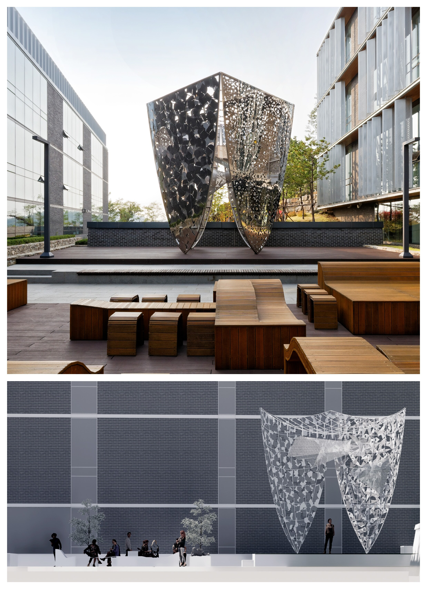
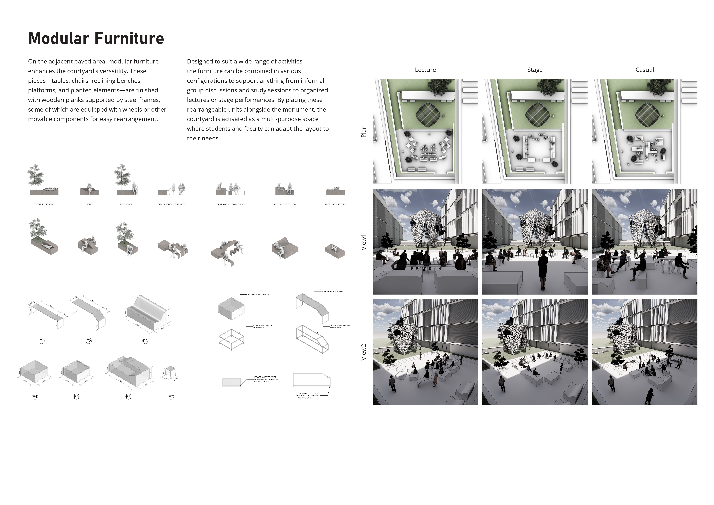

A built courtyard installation at Seoul Foreign School, made of a pavilion-like monument and a set of modular furniture. The monument has four stainless steel shields, one for each symbol of the school emblem: the book, the torch, the atom, and the cross. Each shield is two overlaid perforated layers on a tubular frame. The perforation is a randomly scattered pattern of the shield's symbol, generated in Grasshopper, with size, density, and randomness adjusted so the plate stays open enough to see through and still rigid.
Mesh tunnels connect opposite shields and act as structural support. A hanging LED fixture at the top responds to passersby through a motion sensing camera. The furniture is wooden planks on steel frames, some on wheels, and can be rearranged for lectures, stage performances, or casual use.

